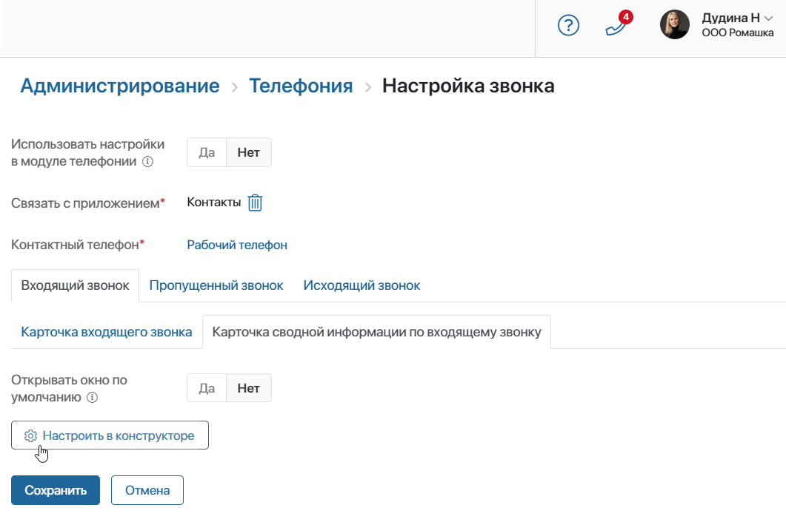
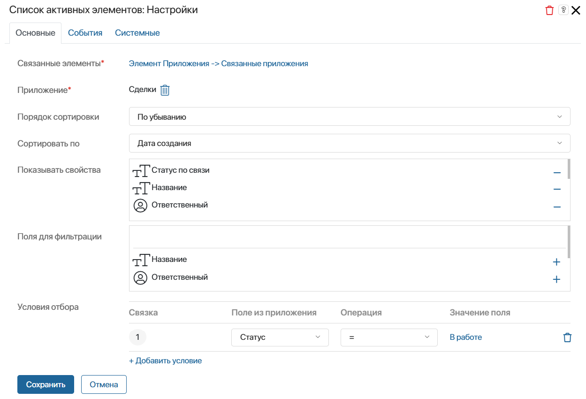

If you have a license for the BRIX Communication Management system solution, a sales rep can open a summary page for an incoming or outgoing call. In this page, they can access the client’s contact data, as well as their leads and deals. By selecting the desired item and linking it with the call, the sales rep will save communication history with the client in the item page.
Please note that the call data is displayed in the app item pages if the Call Log widget is placed on their forms.
The page is a form with preset tabs: About Contact, Active Items, and All Activities Related to Contact. You can customize widget settings on the page and add additional data to it.
For more information about working with the summary page, see the Work with a call article.
Customize the appearance of the summary page
начало внимание
Only a system administrator can customize the page.
конец внимание
You can customize the page for incoming and outgoing calls in the same way. Let's see how to do it using an incoming call as an example:
- In Administration > Set Up Call, go to the Summary Information Page for Incoming Call tab.
 - In the Open the window by default field:
- Select Yes to have the summary page open automatically when the sales rep answers the call.
- Select No. Then the sales rep will open the page during or after the call.
- To customize the appearance of the page and the data that will be displayed on it, click Set Up in Designer. The interface designer will open, where you can:
- Set conditions for selecting items from the Leads and Deals apps. For example, show only records in a certain status on the page.
- Select properties of Contacts, Leads, and Deals apps that will be displayed on the page.
- Add widgets and specify another app in whose items you want to store the history of calls with the client, for example, Companies. Please note that the Call Log widget must be placed on the app form.
Customize the About Contact tab
The tab contains a Data about Call Processing App Item widget. It displays the client's contact data during a call.
To customize the widget settings:
- Click the widget and then the gear icon.
- In the window that opens, fill in the fields:

- Phone number* and Selected contact*. The fields are filled in automatically. The properties of the Calls app are specified here. They contain the client’s contact details identified by the phone number during the call. You cannot change the values.
- Show the “Edit” button. Enable the button. By clicking it, the sales rep will open the contact page and will be able to edit the data in it.
- Show the “Select Other” button. Enable the button. If there are several records with the same phone number in a linked app, for example Contacts, the wrong item may be recognized during a call. By clicking the button, the sales rep will select the correct entry from the app and link it with the call.
- Show properties. Specify the properties of the linked app, by default it is Contacts, which will be shown in the page. By them, the sales rep will familiarize with the client’s details.
- Save the settings.
Customize the Active Items tab
The tab contains two Item for Linking with Call widgets. The default settings for one of them specify the Leads app, while the other is set to Deals. Each widget displays a newly created app item during the call, which is used to work with the client.
To customize the widget settings:
- Click the widget and then the gear icon.
- In the window that opens, fill in the fields:

- Sorting order. No need to fill in the field.
- Associated items*. The field is filled in automatically. It specifies the property of the Calls app, to which the item will be added, if the sales rep links it with a call. The value cannot be changed.
- App. The Leads or Deals app can be specified by default. Its item will be shown on the page to link with the call.
- Sort by. You do not need to fill in the field.
- Show properties. Select the fields of the specified app that you want to display on the page.
- Filter conditions. Add a condition so that only items matching it are displayed on the page. For example, so that a deal in the Processing status is offered to link with the call.
Please note that the condition must coincide with the filter conditions specified in the List of Active Items widget on the All Activities by Contact tab. If this is not the case, the page will display incorrect information.
- Save the settings.
Customize the All Activities by Contact tab
Here you can customize separate tabs for leads and deals. Each of them contains the List of Active Items widget, which displays all leads or deals on which you have worked with a client.
To customize the settings:
- Go to one of the tabs, for example, Deals.
- Click the List of Active Items widget, and then click the gear icon.
- In the window that opens, fill in the fields:

- Associated items*. The field is filled in automatically. It specifies the property of the Calls app, to which the item will be added if the manager links it to a call. The value cannot be changed.
- App*. The Deals app is specified by default; its items will be shown on the page.
- Sorting order. Select in which order the records of the specified app will be displayed.
- Sort by. Select the parameter by which the sequence of items in the list will be formed.
- Show properties. Select the app properties to be displayed on the page.
- Filter fields. Select the fields by which the sales rep can quickly find items in the list.
- Filter conditions. Add a condition so that only items that match it are displayed on the page. For example, only deals in the Processing status should be offered for linking with a call.
Please note that the condition must coincide with the filter conditions specified in the Item for Linking with Call widget on the Active Items tab. If it does not, the page will display incorrect information.
- Save the settings.
After customizing the widgets placed on the default page, you can create an additional tab on the form and place custom widgets on it. Then publish the form.
To finish customizing the summary page for an incoming call, on the Administration > Set Up Call page, click Save.
Set the appearance of the summary information page for an outgoing call in the same way.
Found a typo? Select it and press Ctrl+Enter to send us feedback